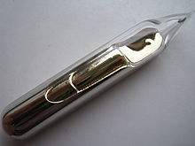

Caesium
|  | |||||||||||||||||||||||||||||||||||||||||||||||||||||||||||||||||||||||||||||||||||||||||||||||||||||||||||||||||||||||||||||||||||||||||||||||||||||||||||||||||||||||||||||||||||||||||||||||||||||||||||||||||||||||||||||||||||||
|
Spectral lines of caesium
|
|||||||||||||||||||||||||||||||||||||||||||||||||||||||||||||||||||||||||||||||||||||||||||||||||||||||||||||||||||||||||||||||||||||||||||||||||||||||||||||||||||||||||||||||||||||||||||||||||||||||||||||||||||||||||||||||||||||
| General properties | |||||||||||||||||||||||||||||||||||||||||||||||||||||||||||||||||||||||||||||||||||||||||||||||||||||||||||||||||||||||||||||||||||||||||||||||||||||||||||||||||||||||||||||||||||||||||||||||||||||||||||||||||||||||||||||||||||||
|---|---|---|---|---|---|---|---|---|---|---|---|---|---|---|---|---|---|---|---|---|---|---|---|---|---|---|---|---|---|---|---|---|---|---|---|---|---|---|---|---|---|---|---|---|---|---|---|---|---|---|---|---|---|---|---|---|---|---|---|---|---|---|---|---|---|---|---|---|---|---|---|---|---|---|---|---|---|---|---|---|---|---|---|---|---|---|---|---|---|---|---|---|---|---|---|---|---|---|---|---|---|---|---|---|---|---|---|---|---|---|---|---|---|---|---|---|---|---|---|---|---|---|---|---|---|---|---|---|---|---|---|---|---|---|---|---|---|---|---|---|---|---|---|---|---|---|---|---|---|---|---|---|---|---|---|---|---|---|---|---|---|---|---|---|---|---|---|---|---|---|---|---|---|---|---|---|---|---|---|---|---|---|---|---|---|---|---|---|---|---|---|---|---|---|---|---|---|---|---|---|---|---|---|---|---|---|---|---|---|---|---|---|---|---|---|---|---|---|---|---|---|---|---|---|---|---|---|---|---|
| Name, symbol | caesium, Cs | ||||||||||||||||||||||||||||||||||||||||||||||||||||||||||||||||||||||||||||||||||||||||||||||||||||||||||||||||||||||||||||||||||||||||||||||||||||||||||||||||||||||||||||||||||||||||||||||||||||||||||||||||||||||||||||||||||||
| Pronunciation | /ˈsiːziəm/ SEE-zee-əm |
||||||||||||||||||||||||||||||||||||||||||||||||||||||||||||||||||||||||||||||||||||||||||||||||||||||||||||||||||||||||||||||||||||||||||||||||||||||||||||||||||||||||||||||||||||||||||||||||||||||||||||||||||||||||||||||||||||
| Alternative name | cesium | ||||||||||||||||||||||||||||||||||||||||||||||||||||||||||||||||||||||||||||||||||||||||||||||||||||||||||||||||||||||||||||||||||||||||||||||||||||||||||||||||||||||||||||||||||||||||||||||||||||||||||||||||||||||||||||||||||||
| Appearance | silvery gold | ||||||||||||||||||||||||||||||||||||||||||||||||||||||||||||||||||||||||||||||||||||||||||||||||||||||||||||||||||||||||||||||||||||||||||||||||||||||||||||||||||||||||||||||||||||||||||||||||||||||||||||||||||||||||||||||||||||
| Caesium in the periodic table | |||||||||||||||||||||||||||||||||||||||||||||||||||||||||||||||||||||||||||||||||||||||||||||||||||||||||||||||||||||||||||||||||||||||||||||||||||||||||||||||||||||||||||||||||||||||||||||||||||||||||||||||||||||||||||||||||||||
|
|||||||||||||||||||||||||||||||||||||||||||||||||||||||||||||||||||||||||||||||||||||||||||||||||||||||||||||||||||||||||||||||||||||||||||||||||||||||||||||||||||||||||||||||||||||||||||||||||||||||||||||||||||||||||||||||||||||
| Atomic number | 55 | ||||||||||||||||||||||||||||||||||||||||||||||||||||||||||||||||||||||||||||||||||||||||||||||||||||||||||||||||||||||||||||||||||||||||||||||||||||||||||||||||||||||||||||||||||||||||||||||||||||||||||||||||||||||||||||||||||||
| Standard atomic weight (±) | 132.90545196(6)[1] | ||||||||||||||||||||||||||||||||||||||||||||||||||||||||||||||||||||||||||||||||||||||||||||||||||||||||||||||||||||||||||||||||||||||||||||||||||||||||||||||||||||||||||||||||||||||||||||||||||||||||||||||||||||||||||||||||||||
| Element category | alkali metal | ||||||||||||||||||||||||||||||||||||||||||||||||||||||||||||||||||||||||||||||||||||||||||||||||||||||||||||||||||||||||||||||||||||||||||||||||||||||||||||||||||||||||||||||||||||||||||||||||||||||||||||||||||||||||||||||||||||
| Group, block | group 1 (alkali metals), s-block | ||||||||||||||||||||||||||||||||||||||||||||||||||||||||||||||||||||||||||||||||||||||||||||||||||||||||||||||||||||||||||||||||||||||||||||||||||||||||||||||||||||||||||||||||||||||||||||||||||||||||||||||||||||||||||||||||||||
| Period | period 6 | ||||||||||||||||||||||||||||||||||||||||||||||||||||||||||||||||||||||||||||||||||||||||||||||||||||||||||||||||||||||||||||||||||||||||||||||||||||||||||||||||||||||||||||||||||||||||||||||||||||||||||||||||||||||||||||||||||||
| Electron configuration | [Xe] 6s1 | ||||||||||||||||||||||||||||||||||||||||||||||||||||||||||||||||||||||||||||||||||||||||||||||||||||||||||||||||||||||||||||||||||||||||||||||||||||||||||||||||||||||||||||||||||||||||||||||||||||||||||||||||||||||||||||||||||||
| per shell | 2, 8, 18, 18, 8, 1 | ||||||||||||||||||||||||||||||||||||||||||||||||||||||||||||||||||||||||||||||||||||||||||||||||||||||||||||||||||||||||||||||||||||||||||||||||||||||||||||||||||||||||||||||||||||||||||||||||||||||||||||||||||||||||||||||||||||
| Physical properties | |||||||||||||||||||||||||||||||||||||||||||||||||||||||||||||||||||||||||||||||||||||||||||||||||||||||||||||||||||||||||||||||||||||||||||||||||||||||||||||||||||||||||||||||||||||||||||||||||||||||||||||||||||||||||||||||||||||
| Phase | solid | ||||||||||||||||||||||||||||||||||||||||||||||||||||||||||||||||||||||||||||||||||||||||||||||||||||||||||||||||||||||||||||||||||||||||||||||||||||||||||||||||||||||||||||||||||||||||||||||||||||||||||||||||||||||||||||||||||||
| Melting point | 301.7 K (28.5 °C, 83.3 °F) | ||||||||||||||||||||||||||||||||||||||||||||||||||||||||||||||||||||||||||||||||||||||||||||||||||||||||||||||||||||||||||||||||||||||||||||||||||||||||||||||||||||||||||||||||||||||||||||||||||||||||||||||||||||||||||||||||||||
| Boiling point | 944 K (671 °C, 1240 °F) | ||||||||||||||||||||||||||||||||||||||||||||||||||||||||||||||||||||||||||||||||||||||||||||||||||||||||||||||||||||||||||||||||||||||||||||||||||||||||||||||||||||||||||||||||||||||||||||||||||||||||||||||||||||||||||||||||||||
| Density near r.t. | 1.93 g·cm−3 | ||||||||||||||||||||||||||||||||||||||||||||||||||||||||||||||||||||||||||||||||||||||||||||||||||||||||||||||||||||||||||||||||||||||||||||||||||||||||||||||||||||||||||||||||||||||||||||||||||||||||||||||||||||||||||||||||||||
| when liquid, at m.p. | 1.843 g·cm−3 | ||||||||||||||||||||||||||||||||||||||||||||||||||||||||||||||||||||||||||||||||||||||||||||||||||||||||||||||||||||||||||||||||||||||||||||||||||||||||||||||||||||||||||||||||||||||||||||||||||||||||||||||||||||||||||||||||||||
| Critical point | 1938 K, 9.4 MPa[2] | ||||||||||||||||||||||||||||||||||||||||||||||||||||||||||||||||||||||||||||||||||||||||||||||||||||||||||||||||||||||||||||||||||||||||||||||||||||||||||||||||||||||||||||||||||||||||||||||||||||||||||||||||||||||||||||||||||||
| Heat of fusion | 2.09 kJ·mol−1 | ||||||||||||||||||||||||||||||||||||||||||||||||||||||||||||||||||||||||||||||||||||||||||||||||||||||||||||||||||||||||||||||||||||||||||||||||||||||||||||||||||||||||||||||||||||||||||||||||||||||||||||||||||||||||||||||||||||
| Heat of vapourisation | 63.9 kJ·mol−1 | ||||||||||||||||||||||||||||||||||||||||||||||||||||||||||||||||||||||||||||||||||||||||||||||||||||||||||||||||||||||||||||||||||||||||||||||||||||||||||||||||||||||||||||||||||||||||||||||||||||||||||||||||||||||||||||||||||||
| Molar heat capacity | 32.210 J·mol−1·K−1 | ||||||||||||||||||||||||||||||||||||||||||||||||||||||||||||||||||||||||||||||||||||||||||||||||||||||||||||||||||||||||||||||||||||||||||||||||||||||||||||||||||||||||||||||||||||||||||||||||||||||||||||||||||||||||||||||||||||
vapour pressure
|
|||||||||||||||||||||||||||||||||||||||||||||||||||||||||||||||||||||||||||||||||||||||||||||||||||||||||||||||||||||||||||||||||||||||||||||||||||||||||||||||||||||||||||||||||||||||||||||||||||||||||||||||||||||||||||||||||||||
| Atomic properties | |||||||||||||||||||||||||||||||||||||||||||||||||||||||||||||||||||||||||||||||||||||||||||||||||||||||||||||||||||||||||||||||||||||||||||||||||||||||||||||||||||||||||||||||||||||||||||||||||||||||||||||||||||||||||||||||||||||
| Oxidation states | +1, −1[3] (a strongly basic oxide) | ||||||||||||||||||||||||||||||||||||||||||||||||||||||||||||||||||||||||||||||||||||||||||||||||||||||||||||||||||||||||||||||||||||||||||||||||||||||||||||||||||||||||||||||||||||||||||||||||||||||||||||||||||||||||||||||||||||
| Electronegativity | Pauling scale: 0.79 | ||||||||||||||||||||||||||||||||||||||||||||||||||||||||||||||||||||||||||||||||||||||||||||||||||||||||||||||||||||||||||||||||||||||||||||||||||||||||||||||||||||||||||||||||||||||||||||||||||||||||||||||||||||||||||||||||||||
| Ionisation energies | 1st: 375.7 kJ·mol−1 2nd: 2234.3 kJ·mol−1 3rd: 3400 kJ·mol−1 |
||||||||||||||||||||||||||||||||||||||||||||||||||||||||||||||||||||||||||||||||||||||||||||||||||||||||||||||||||||||||||||||||||||||||||||||||||||||||||||||||||||||||||||||||||||||||||||||||||||||||||||||||||||||||||||||||||||
| Atomic radius | empirical: 265 pm | ||||||||||||||||||||||||||||||||||||||||||||||||||||||||||||||||||||||||||||||||||||||||||||||||||||||||||||||||||||||||||||||||||||||||||||||||||||||||||||||||||||||||||||||||||||||||||||||||||||||||||||||||||||||||||||||||||||
| Covalent radius | 244±11 pm | ||||||||||||||||||||||||||||||||||||||||||||||||||||||||||||||||||||||||||||||||||||||||||||||||||||||||||||||||||||||||||||||||||||||||||||||||||||||||||||||||||||||||||||||||||||||||||||||||||||||||||||||||||||||||||||||||||||
| Van der Waals radius | 343 pm | ||||||||||||||||||||||||||||||||||||||||||||||||||||||||||||||||||||||||||||||||||||||||||||||||||||||||||||||||||||||||||||||||||||||||||||||||||||||||||||||||||||||||||||||||||||||||||||||||||||||||||||||||||||||||||||||||||||
| Miscellanea | |||||||||||||||||||||||||||||||||||||||||||||||||||||||||||||||||||||||||||||||||||||||||||||||||||||||||||||||||||||||||||||||||||||||||||||||||||||||||||||||||||||||||||||||||||||||||||||||||||||||||||||||||||||||||||||||||||||
| Crystal structure | body-centered cubic (bcc)
 |
||||||||||||||||||||||||||||||||||||||||||||||||||||||||||||||||||||||||||||||||||||||||||||||||||||||||||||||||||||||||||||||||||||||||||||||||||||||||||||||||||||||||||||||||||||||||||||||||||||||||||||||||||||||||||||||||||||
| Thermal expansion | 97 µm·m−1·K−1 (at 25 °C) | ||||||||||||||||||||||||||||||||||||||||||||||||||||||||||||||||||||||||||||||||||||||||||||||||||||||||||||||||||||||||||||||||||||||||||||||||||||||||||||||||||||||||||||||||||||||||||||||||||||||||||||||||||||||||||||||||||||
| Thermal conductivity | 35.9 W·m−1·K−1 | ||||||||||||||||||||||||||||||||||||||||||||||||||||||||||||||||||||||||||||||||||||||||||||||||||||||||||||||||||||||||||||||||||||||||||||||||||||||||||||||||||||||||||||||||||||||||||||||||||||||||||||||||||||||||||||||||||||
| Electrical resistivity | 205 nΩ·m (at 20 °C) | ||||||||||||||||||||||||||||||||||||||||||||||||||||||||||||||||||||||||||||||||||||||||||||||||||||||||||||||||||||||||||||||||||||||||||||||||||||||||||||||||||||||||||||||||||||||||||||||||||||||||||||||||||||||||||||||||||||
| Magnetic ordering | paramagnetic[4] | ||||||||||||||||||||||||||||||||||||||||||||||||||||||||||||||||||||||||||||||||||||||||||||||||||||||||||||||||||||||||||||||||||||||||||||||||||||||||||||||||||||||||||||||||||||||||||||||||||||||||||||||||||||||||||||||||||||
| Young's modulus | 1.7 GPa | ||||||||||||||||||||||||||||||||||||||||||||||||||||||||||||||||||||||||||||||||||||||||||||||||||||||||||||||||||||||||||||||||||||||||||||||||||||||||||||||||||||||||||||||||||||||||||||||||||||||||||||||||||||||||||||||||||||
| Bulk modulus | 1.6 GPa | ||||||||||||||||||||||||||||||||||||||||||||||||||||||||||||||||||||||||||||||||||||||||||||||||||||||||||||||||||||||||||||||||||||||||||||||||||||||||||||||||||||||||||||||||||||||||||||||||||||||||||||||||||||||||||||||||||||
| Mohs hardness | 0.2 | ||||||||||||||||||||||||||||||||||||||||||||||||||||||||||||||||||||||||||||||||||||||||||||||||||||||||||||||||||||||||||||||||||||||||||||||||||||||||||||||||||||||||||||||||||||||||||||||||||||||||||||||||||||||||||||||||||||
| Brinell hardness | 0.14 MPa | ||||||||||||||||||||||||||||||||||||||||||||||||||||||||||||||||||||||||||||||||||||||||||||||||||||||||||||||||||||||||||||||||||||||||||||||||||||||||||||||||||||||||||||||||||||||||||||||||||||||||||||||||||||||||||||||||||||
| CAS Registry Number | 7440-46-2 | ||||||||||||||||||||||||||||||||||||||||||||||||||||||||||||||||||||||||||||||||||||||||||||||||||||||||||||||||||||||||||||||||||||||||||||||||||||||||||||||||||||||||||||||||||||||||||||||||||||||||||||||||||||||||||||||||||||
| History | |||||||||||||||||||||||||||||||||||||||||||||||||||||||||||||||||||||||||||||||||||||||||||||||||||||||||||||||||||||||||||||||||||||||||||||||||||||||||||||||||||||||||||||||||||||||||||||||||||||||||||||||||||||||||||||||||||||
| Naming | from Latin caesius, sky blue, for its spectral colours | ||||||||||||||||||||||||||||||||||||||||||||||||||||||||||||||||||||||||||||||||||||||||||||||||||||||||||||||||||||||||||||||||||||||||||||||||||||||||||||||||||||||||||||||||||||||||||||||||||||||||||||||||||||||||||||||||||||
| Discovery | Robert Bunsen and Gustav Kirchhoff (1860) | ||||||||||||||||||||||||||||||||||||||||||||||||||||||||||||||||||||||||||||||||||||||||||||||||||||||||||||||||||||||||||||||||||||||||||||||||||||||||||||||||||||||||||||||||||||||||||||||||||||||||||||||||||||||||||||||||||||
| First isolation | Carl Setterberg (1882) | ||||||||||||||||||||||||||||||||||||||||||||||||||||||||||||||||||||||||||||||||||||||||||||||||||||||||||||||||||||||||||||||||||||||||||||||||||||||||||||||||||||||||||||||||||||||||||||||||||||||||||||||||||||||||||||||||||||
| Most stable isotopes | |||||||||||||||||||||||||||||||||||||||||||||||||||||||||||||||||||||||||||||||||||||||||||||||||||||||||||||||||||||||||||||||||||||||||||||||||||||||||||||||||||||||||||||||||||||||||||||||||||||||||||||||||||||||||||||||||||||
|
|||||||||||||||||||||||||||||||||||||||||||||||||||||||||||||||||||||||||||||||||||||||||||||||||||||||||||||||||||||||||||||||||||||||||||||||||||||||||||||||||||||||||||||||||||||||||||||||||||||||||||||||||||||||||||||||||||||
| Decay modes in parentheses are predicted, but have not yet been observed | |||||||||||||||||||||||||||||||||||||||||||||||||||||||||||||||||||||||||||||||||||||||||||||||||||||||||||||||||||||||||||||||||||||||||||||||||||||||||||||||||||||||||||||||||||||||||||||||||||||||||||||||||||||||||||||||||||||
Caesium or cesium[note 1] is a chemical element with symbol Cs and atomic number 55. It is a soft, silvery-gold alkali metal with a melting point of 28 °C (82 °F), which makes it one of only five elemental metals that are liquid at or near room temperature.[note 2] Caesium is an alkali metal and has physical and chemical properties similar to those of rubidium and potassium. The metal is extremely reactive and pyrophoric, reacting with water even at −116 °C (−177 °F). It is the least electronegative element with a stable isotope, caesium-133. Caesium is mined mostly from pollucite, while the radioisotopes, especially caesium-137, a fission product, are extracted from waste produced by nuclear reactors.
The German chemist, Robert Bunsen and physicist, Gustav Kirchhoff, discovered caesium in 1860 by the newly developed method of flame spectroscopy. The first small-scale applications for caesium were as a "getter" in vacuum tubes and in photoelectric cells. In 1967, based on Einstein defining the speed of light as the most constant dimension in the universe, the International System of Units isolated two specific wave counts from an emission spectrum of caesium-133 to co-define the second and the meter. Since then, caesium has been widely used in highly accurate atomic clocks.
Since the 1990s, the largest application of the element has been as caesium formate for drilling fluids. It has a range of applications in the production of electricity, in electronics, and in chemistry. The radioactive isotope caesium-137 has a half-life of about 30 years and is used in medical applications, industrial gauges, and hydrology. Although the element is only mildly toxic, it is a hazardous material as a metal and its radioisotopes present a high health risk if released into the environment.
Contents
[hide]Characteristics[edit]
Physical properties[edit]
Caesium is a very soft (it has the lowest hardness of all elements, 0.2 Mohs), very ductile, pale metal, which darkens in the presence of trace amounts of oxygen.[10][11][12] It has a melting point of 28.4 °C (83.1 °F), making it one of the few elemental metals that are liquid near room temperature. Mercury is the only elemental metal with a known melting point lower than caesium.[note 3][14] In addition, the metal has a rather low boiling point, 641 °C (1,186 °F), the lowest of all metals other than mercury.[15] Its compounds burn with a blue[16][17] or violet[17] colour.
Caesium forms alloys with the other alkali metals, as well as with gold, and amalgams with mercury. At temperatures below 650 °C (1,202 °F), it does not alloy with cobalt, iron, molybdenum, nickel, platinum, tantalum or tungsten. It forms well-defined intermetallic compounds with antimony, gallium, indium and thorium, which are photosensitive.[10] It mixes with all the other alkali metals (except lithium); the alloy with a molar distribution of 41% caesium, 47% potassium, and 12% sodium has the lowest melting point of any known metal alloy, at −78 °C (−108 °F).[14][18] A few amalgams have been studied: CsHg
2 is black with a purple metallic luster, while CsHg is golden-coloured, also with a metallic luster.[19]
Chemical properties[edit]
Caesium metal is highly reactive and very pyrophoric. In addition to igniting spontaneously in air, it reacts explosively with water even at low temperatures, more so than other members of the first group of the periodic table.[10] The reaction with solid water occurs at temperatures as low as −116 °C (−177 °F).[14] Because of its high reactivity, the metal is classified as a hazardous material. It is stored and shipped in dry saturated hydrocarbons, such as mineral oil. Similarly, it must be handled under inert gas, such as argon. However, a caesium-water explosion is often less powerful than a sodium-water explosion with a similar amount of sodium. This is because caesium explodes instantly upon contact with water, leaving little time for hydrogen to accumulate.[20] Caesium can be stored in vacuum-sealed borosilicate glass ampoules. In quantities of more than about 100 grams (3.5 oz), caesium is shipped in hermetically sealed, stainless steel containers.[10]
The chemistry of caesium is similar to that of other alkali metals, but is more closely similar to that of rubidium, the element above caesium in the periodic table.[21] As expected for an alkali metal, its only common oxidation state is +1.[note 4] Some small differences arise from the fact that it has a higher atomic mass and is more electropositive than other (nonradioactive) alkali metals.[23] Caesium is the most electropositive stable chemical element.[note 5][14] The caesium ion is also larger and less "hard" than those of the lighter alkali metals.
Compounds[edit]
The vast majority of caesium compounds contain the element as the cation Cs+
, which binds ionically to a wide variety of anions. One noteworthy exception is provided by the caeside anion (Cs−
).[3] Other exceptions include the several suboxides (see section on oxides below).
Returning to more normal compounds, salts of Cs+ are almost invariably colourless unless the anion itself is coloured. Many of the simple salts are hygroscopic, but less so than the corresponding salts of the lighter alkali metals. The phosphate,[25] acetate, carbonate, halides, oxide, nitrate, and sulfate salts are water-soluble. Double salts
are often less soluble, and the low solubility of caesium aluminium
sulfate is exploited in the purification of Cs from its ores. The double
salt with antimony (such as CsSbCl
4), bismuth, cadmium, copper, iron, and lead are also poorly soluble.[10]
Caesium hydroxide (CsOH) is hygroscopic and a very strong base.[21] It rapidly etches the surface of semiconductors such as silicon.[26] CsOH has been previously regarded by chemists as the "strongest base", reflecting the relatively weak attraction between the large Cs+ ion and OH−;[16] it is indeed the strongest Arrhenius base, but a number of compounds that cannot exist in aqueous solution, such as n-butyllithium and sodium amide,[21] are more basic.
A stoichiometric mixture of caesium and gold will react to form yellow caesium auride (Cs+Au−) upon heating. The auride anion here behaves as a pseudohalogen. The compound reacts violently with water, yielding caesium hydroxide, metallic gold, and hydrogen gas; in liquid ammonia it can be reacted with a caesium-specific ion exchange resin to produce tetramethylammonium auride. The analogous platinum compound, the red caesium platinide (Cs2Pt), contains the platinide ion that behaves as a pseudochalcogen.[27]
Complexes[edit]
Like all metal cations, Cs+ forms complexes with Lewis bases in solution. Because of its large size, Cs+ usually adopts coordination numbers greater than six-coordination, which is typical for the lighter alkali metal cations. This trend is already apparent by the 8-coordination in CsCl, vs. the halite motif adopted by the other alkali metal chlorides. Its high coordination number and softness (tendency to form covalent bonds) are the basis of the separation of Cs+ from other cations, as is practiced in the remediation of nuclear wastes, where 137Cs+ is separated from large amounts of nonradioactive K+.[28]
Halides[edit]
Caesium fluoride (CsF) is a hygroscopic white solid that is widely used in organofluorine chemistry as a source of the fluoride anion.[29] Caesium fluoride has the halite structure, which means that the Cs+ and F− pack in a cubic closest packed array as do Na+ and Cl− in sodium chloride.[21] It is noteworthy as caesium and fluorine have the lowest and highest electronegativities respectively among all the known elements.
Caesium chloride (CsCl) crystallizes in the simple cubic crystal system. Also called the "caesium chloride structure",[23] this structural motif is composed of a primitive cubic lattice with a two-atom basis, each with an eightfold coordination;
the chloride atoms lie upon the lattice points at the edges of the
cube, while the caesium atoms lie in the holes in the center of the
cubes. This structure is shared with CsBr and CsI, and many other compounds that do not contain Cs. In contrast, most other alkaline halides adopt the sodium chloride (NaCl) structure.[23] The CsCl structure is preferred because Cs+ has an ionic radius of 174 pm and Cl−
181 pm.[30]
Oxides[edit]
More so than the other alkali metals, caesium forms numerous binary compounds with oxygen. When caesium burns in air, the superoxide CsO
2 is the main product.[31] The "normal" caesium oxide (Cs
2O) forms yellow-orange hexagonal crystals,[32] and is the only oxide of the anti-CdCl
2 type.[33] It vaporizes at 250 °C (482 °F), and decomposes to caesium metal and the peroxide Cs
2O
2 at temperatures above 400 °C (752 °F).[34] Aside from the superoxide and the ozonide CsO
3,[35][36] several brightly coloured suboxides have also been studied.[37] These include Cs
7O, Cs
4O, Cs
11O
3, Cs
3O (dark-green[38]), CsO, Cs
3O
2,[39] as well as Cs
7O
2.[40][41] The latter may be heated under vacuum to generate Cs
2O.[33] Binary compounds with sulfur, selenium, and tellurium also exist.[10]
Isotopes[edit]
Caesium has a total of 39 known isotopes that range in their mass number (i.e. number of nucleons in its nucleus) from 112 to 151. Several of these are synthesized from lighter elements by the slow neutron capture process (S-process) inside old stars,[42] as well as inside supernova explosions (R-process).[43] However, the only stable caesium isotope is 133Cs, which has 78 neutrons. Although it has a large nuclear spin (7⁄2+), nuclear magnetic resonance studies can be done with this isotope at a resonating frequency of 11.7 MHz.[44]
The radioactive 135Cs has a very long half-life of about 2.3 million years, longest of all radioactive isotopes of caesium. 137Cs and 134Cs have half-lives of 30 and two years, respectively. 137Cs decomposes to a short-lived 137mBa by beta decay, and then to nonradioactive barium, while 134Cs transforms into 134Ba directly. The isotopes with mass numbers of 129, 131, 132 and 136, have half-lives between a day and two weeks, while most of the other isotopes have half-lives from a few seconds to fractions of a second. There are at least 21 metastable nuclear isomers. Other than 134mCs (with a half-life of just under 3 hours), all are very unstable and decay with half-lives of a few minutes or less.[45][46]
The isotope 135Cs is one of the long-lived fission products of uranium which form in nuclear reactors.[47] However, its fission product yield is reduced in most reactors because its predecessor, 135Xe, is an extremely potent neutron poison and transmutes frequently to stable 136Xe before it can decay to 135Cs.[48][49]
Because of its beta decay (to 137mBa), 137Cs is a strong emitter of gamma radiation.[50] Its half-life makes it the principal medium-lived fission product along with 90Sr—both are responsible for radioactivity of spent nuclear fuel after several years of cooling up to several hundred years after use.[51] For example 137Cs together with 90Sr currently generate the largest source of radioactivity generated in the area around the Chernobyl disaster.[52] It is not feasible to dispose of 137Cs through neutron capture (due to the low capture rate) and as a result it must be allowed to decay.[53]
Almost all caesium produced from nuclear fission comes from beta decay of originally more neutron-rich fission products, passing through various isotopes of iodine and of xenon.[54] Because iodine and xenon are volatile and can diffuse through nuclear fuel or air, radioactive caesium is often created far from the original site of fission.[55] With the commencement of nuclear weapons testing around 1945, 137Cs was released into the atmosphere and then returned to the surface of the earth as a component of radioactive fallout.[10]
Occurrence[edit]
Caesium is a relatively rare element as it is estimated to average approximately 3 parts per million in the Earth's crust.[56] This makes it the 45th most abundant of all elements and the 36th of all the metals. Nevertheless, it is more abundant than such elements as antimony, cadmium, tin and tungsten, and two orders of magnitude more abundant than mercury or silver, but 3.3% as abundant as rubidium—with which it is so closely chemically associated.[10]
Due to its large ionic radius, caesium is one of the "incompatible elements".[57] During magma crystallization, caesium is concentrated in the liquid phase and crystallizes last. Therefore, the largest deposits of caesium are zone pegmatite ore bodies formed by this enrichment process. Because caesium does not substitute for potassium as readily as does rubidium, the alkali evaporite minerals sylvite (KCl) and carnallite (KMgCl
3·6H
2O) may contain only 0.002% caesium. Consequently, Cs is found in few minerals. Percentage amounts of caesium may be found in beryl (Be
3Al
2(SiO
3)
6) and avogadrite ((K,Cs)BF
4), up to 15 wt% Cs2O in the closely related mineral pezzottaite (Cs(Be2Li)Al2Si6O18), up to 8.4 wt% Cs2O in the rare mineral londonite ((Cs,K)Al
4Be
4(B,Be)
12O
28), and less in the more widespread rhodizite.[10] The only economically important source mineral for caesium is pollucite Cs(AlSi
2O
6), which is found in a few places around the world in zoned pegmatites, and is associated with the more commercially important lithium minerals lepidolite and petalite. Within the pegmatites, the large grain size and the strong separation of the minerals create high-grade ore for mining.[58]
One of the world's most significant and richest sources of the metal is the Tanco Mine at Bernic Lake in Manitoba, Canada. The deposits there are estimated to contain 350,000 metric tons of pollucite ore, which represent more than two-thirds of the world's reserve base.[58][59] Although the stoichiometric content of caesium in pollucite is 42.6%, pure pollucite samples from this deposit contain only about 34% caesium, while the average content is 24 wt%.[59] Commercial pollucite contains over 19% caesium.[60] The Bikita pegmatite deposit in Zimbabwe is mined for its petalite, but it also contains a significant amount of pollucite. Notable amounts of pollucite are also mined in the Karibib Desert, Namibia.[59] At the present rate of world mine production of 5 to 10 metric tons per year, reserves will last for thousands of years.[10]
Production[edit]
The mining of pollucite ore is a selective process and is conducted on a small scale in comparison with most metal mining operations. The ore is crushed, hand-sorted, but not usually concentrated, and then ground. Caesium is then extracted from pollucite mainly by three methods: acid digestion, alkaline decomposition, and direct reduction.[10][61]
In the acid digestion, the silicate pollucite rock is dissolved with strong acids, such as hydrochloric (HCl), sulfuric (H
2SO
4), hydrobromic (HBr), or hydrofluoric
(HF) acids. With hydrochloric acid, a mixture of soluble chlorides is
produced, and the insoluble chloride double salts of caesium are
precipitated as caesium antimony chloride (Cs
4SbCl
7), caesium iodine chloride (Cs
2ICl), or caesium hexachlorocerate (Cs
2(CeCl
6)). After separation, the pure precipitated double salt
is decomposed, and pure CsCl is obtained after evaporating the water.
The method using sulfuric acid yields the insoluble double salt directly
as caesium alum (CsAl(SO
4)
2·12H
2O). The aluminium sulfate in it is converted to the insoluble aluminium oxide by roasting the alum with carbon, and the resulting product is leached with water to yield a Cs
2SO
4 solution.[10]
The roasting of pollucite with calcium carbonate and calcium chloride yields insoluble calcium silicates and soluble caesium chloride. Leaching with water or dilute ammonia (NH
4OH) yields then a dilute chloride (CsCl) solution. This
solution can be evaporated to produce caesium chloride or transformed
into caesium alum or caesium carbonate. Albeit not commercially
feasible, direct reduction of the ore with potassium, sodium or calcium
in vacuum can produce caesium metal directly.[10]
Most of the mined caesium (as salts) is directly converted into caesium formate (HCOO−Cs+) for applications such as oil drilling. To supply the developing market, Cabot Corporation built a production plant in 1997 at the Tanco mine near Bernic Lake in Manitoba, with a capacity of 12,000 barrels (1,900 m3) per year of caesium formate solution.[62] The primary smaller-scale commercial compounds of caesium are caesium chloride and its nitrate.[63]
Alternatively, caesium metal may be obtained from the purified
compounds derived from the ore. Caesium chloride, and the other caesium
halides, as well, can be reduced at 700 to 800 °C (1,292 to
1,472 °F) with calcium or barium, followed by distillation of the caesium metal. In the same way, the aluminate, carbonate, or hydroxide may be reduced by magnesium.[10] The metal can also be isolated by electrolysis of fused caesium cyanide
(CsCN). Exceptionally pure and gas-free caesium can be made by the
thermal decomposition at 390 °C (734 °F) of caesium azide CsN
3, which is produced from aqueous caesium sulfate and barium azide.[61] In vacuum applications, caesium dichromate can be reacted with zirconium forming pure caesium metal without other gaseous products.[63]
- Cs
2Cr
2O
7 + 2 Zr → 2 Cs + 2 ZrO
2+ Cr
2O
3
The price of 99.8% pure caesium (metal basis) in 2009 was about US$10 per gram ($280 per ounce), but its compounds are significantly cheaper.[59]
History[edit]
In 1860, Robert Bunsen and Gustav Kirchhoff discovered caesium in the mineral water from Dürkheim, Germany. Due to the bright blue lines in its emission spectrum, they chose a name derived from the Latin word caesius, meaning sky-blue.[note 6][64][65][66] Caesium was the first element to be discovered spectroscopically, only one year after the invention of the spectroscope by Bunsen and Kirchhoff.[14]
To obtain a pure sample of caesium, 44,000 liters (9,700 imp gal; 12,000 US gal) of mineral water had to be evaporated to yield 240 kilograms (530 lb) of concentrated salt solution. The alkaline earth metals were precipitated either as sulfates or oxalates, leaving the alkali metal in the solution. After conversion to the nitrates and extraction with ethanol, a sodium-free mixture was obtained. From this mixture, the lithium was precipitated by ammonium carbonate. Potassium, rubidium and caesium form insoluble salts with chloroplatinic acid, but these salts show a slight difference in solubility in hot water. Therefore, the less-soluble caesium and rubidium hexachloroplatinate ((Cs,Rb)2PtCl6) could be obtained by fractional crystallization. After reduction of the hexachloroplatinate with hydrogen, caesium and rubidium could be separated by the difference in solubility of their carbonates in alcohol. The process yielded 9.2 grams (0.32 oz) of rubidium chloride and 7.3 grams (0.26 oz) of caesium chloride from the initial 44,000 liters of mineral water.[65]
The two scientists used the caesium chloride thus obtained to estimate the atomic weight of the new element at 123.35 (compared to the currently accepted one of 132.9).[65]
They tried to generate elemental caesium by electrolysis of molten
caesium chloride, but instead of a metal, they obtained a blue
homogenous substance which "neither under the naked eye nor under the
microscope" showed the slightest trace of metallic substance"; as a
result, they assigned it as a subchloride (Cs
2Cl). In reality, the product was probably a colloidal mixture of the metal and caesium chloride.[67]
The electrolysis of the aqueous solution of chloride with a mercury
anode produced a caesium amalgam which readily decomposed under the
aqueous conditions.[65] The pure metal was eventually isolated by the German chemist Carl Setterberg while working on his doctorate with Kekulé and Bunsen.[66] In 1882, he produced caesium metal by electrolysing caesium cyanide, and thus avoiding the problems with the chloride.[68]
Historically, the most important use for caesium has been in research and development, primarily in chemical and electrical fields. Very few applications existed for caesium until the 1920s, when it came to be used in radio vacuum tubes. It had two functions; as a getter, it removed excess oxygen after manufacture, and as a coating on the heated cathode, it increased its electrical conductivity. Caesium did not become recognized as a high-performance industrial metal until the 1950s.[69] Applications of nonradioactive caesium included photoelectric cells, photomultiplier tubes, optical components of infrared spectrophotometers, catalysts for several organic reactions, crystals for scintillation counters, and in magnetohydrodynamic power generators.[10]
Since 1967, the International System of Measurements has based its unit of time, the second, on the properties of caesium. The International System of Units (SI) defines the second as 9,192,631,770 cycles of the radiation, which corresponds to the transition between two hyperfine energy levels of the ground state of the caesium-133 atom.[70] The 13th General Conference on Weights and Measures of 1967 defined a second as: "the duration of 9,192,631,770 cycles of microwave light absorbed or emitted by the hyperfine transition of caesium-133 atoms in their ground state undisturbed by external fields".
Applications[edit]
Petroleum exploration[edit]
The largest current end-use of nonradioactive caesium is in caesium formate-based drilling fluids for the extractive oil industry.[10] Aqueous solutions of caesium formate (HCOO−Cs+)—made by reacting caesium hydroxide with formic acid—were developed in the mid-1990s for use as oil well drilling and completion fluids. The function of a drilling fluid is to lubricate drill bits, to bring rock cuttings to the surface, and to maintain pressure on the formation during drilling of the well. Completion fluids assist the emplacement of control hardware after drilling but prior to production by maintaining the pressure.[10]
The high density of the caesium formate brine (up to 2.3 g·cm−3, or 19.2 pounds per gallon),[71]
coupled with the relatively benign nature of most caesium compounds,
reduces the requirement for toxic high-density suspended solids in the
drilling fluid—a significant technological, engineering and
environmental advantage. Unlike the components of many other heavy
liquids, caesium formate is relatively environment-friendly.[71]
The caesium formate brine can be blended with potassium and sodium
formates to decrease the density of the fluids down to that of water
(1.0 g·cm−3, or 8.3 pounds per gallon).
Furthermore, it is biodegradable and reclaimable, and may be recycled,
which is important in view of its high cost (about $4,000 per barrel in 2001).[72]
Alkali formates are safe to handle and do not damage the producing
formation or downhole metals as corrosive alternative, high-density
brines (such as zinc bromide ZnBr
2 solutions) sometimes do; they also require less cleanup and reduce disposal costs.[10]
Atomic clocks[edit]
Caesium-based atomic clocks observe electromagnetic transitions in the hyperfine structure of caesium-133 atoms and use it as a reference point. The first accurate caesium clock was built by Louis Essen in 1955 at the National Physical Laboratory in the UK.[73] They have been improved repeatedly over the past half-century, and form the basis for standards-compliant time and frequency measurements. These clocks measure frequency with an error of 2 to 3 parts in 1014, which would correspond to a time measurement accuracy of 2 nanoseconds per day, or one second in 1.4 million years. The latest versions are accurate to better than 1 part in 1015, which means they would be off by about 2 seconds since the extinction of the dinosaurs 66 million years ago,[10] and has been regarded as "the most accurate realization of a unit that mankind has yet achieved."[70]
Caesium clocks are also used in networks that oversee the timing of cell phone transmissions and the information flow on the Internet.[74]
Electric power and electronics[edit]
Caesium vapor thermionic generators are low-power devices that convert heat energy to electrical energy. In the two-electrode vacuum tube converter, it neutralizes the space charge that builds up near the cathode, and in doing so, it enhances the current flow.[75]
Caesium is also important for its photoemissive properties by which light energy is converted to electron flow. It is used in photoelectric cells because caesium-based cathodes, such as the intermetallic compound K
2CsSb, have low threshold voltage for emission of electrons.[76] The range of photoemissive devices using caesium include optical character recognition devices, photomultiplier tubes, and video camera tubes.[77][78] Nevertheless, germanium, rubidium, selenium, silicon, tellurium, and several other elements can substitute caesium in photosensitive materials.[10]
Caesium iodide (CsI), bromide (CsBr) and caesium fluoride (CsF) crystals are employed for scintillators in scintillation counters widely used in mineral exploration and particle physics research, as they are well-suited for the detection of gamma and X-ray radiation. Caesium, being a heavy element, provides good stopping power, contributing to better detectivity. Caesium compounds may also provide a faster response (CsF) and be less hygroscopic (CsI).
Caesium vapor is used in many common magnetometers.[79] The element is also used as an internal standard in spectrophotometry.[80] Like other alkali metals, caesium has a great affinity for oxygen and is used as a "getter" in vacuum tubes.[81] Other uses of the metal include high-energy lasers, vapor glow lamps, and vapor rectifiers.[10]
Centrifugation fluids[edit]
Because of their high density, solutions of caesium chloride, caesium sulfate, and caesium trifluoroacetate (Cs(O
2CCF
3)) are commonly used in molecular biology for density gradient ultracentrifugation.[82] This technology is primarily applied to the isolation of viral particles, subcellular organelles and fractions, and nucleic acids from biological samples.[83]
Chemical and medical use[edit]
Relatively few chemical applications exist for caesium.[84] Doping with caesium compounds is used to enhance the effectiveness of several metal-ion catalysts used in the production of chemicals, such as acrylic acid, anthraquinone, ethylene oxide, methanol, phthalic anhydride, styrene, methyl methacrylate monomers, and various olefins. It is also used in the catalytic conversion of sulfur dioxide into sulfur trioxide in the production of sulfuric acid.[10]
Caesium fluoride enjoys niche use in organic chemistry as a base,[21] or as an anhydrous source of fluoride ion.[85] Caesium salts sometimes replace potassium or sodium salts in organic synthesis, such as cyclization, esterification, and polymerization. It has also been used in thermoluminescent radiation dosimetry (TLD): When exposed to radiation, it acquires crystal defects that, when heated, revert with emission of light proportionate to the received dose. Thus, measuring the light pulse with a photomultiplier tube can allow the accumulated radiation dose to be quantified.
Nuclear and isotope applications[edit]
Caesium-137 is a very common radioisotope used as a gamma-emitter in industrial applications. Its advantages include a half-life of roughly 30 years, its availability from the nuclear fuel cycle, and having 137Ba as a stable end product. The high water solubility is a disadvantage which makes it incompatible with large pool irradiators for food and medical supplies.[86] It has been used in agriculture, cancer treatment, and the sterilization of food, sewage sludge, and surgical equipment.[10][87] Radioactive isotopes of caesium in radiation devices were used in the medical field to treat certain types of cancer,[88] but emergence of better alternatives and the use of water-soluble caesium chloride in the sources, which could create wide-ranging contamination, gradually put some of these caesium sources out of use.[89][90] Caesium-137 has been employed in a variety of industrial measurement gauges, including moisture, density, leveling, and thickness gauges.[91] It has also been used in well logging devices for measuring the electron density of the rock formations, which is analogous to the bulk density of the formations.[92]
Isotope 137 has also been used in hydrologic studies analogous to those using tritium. It is a daughter product of nuclear fission reactions. With the commencement of nuclear testing around 1945, and continuing through the mid-1980s, caesium-137 was released into the atmosphere, where it is absorbed readily into solution. Known year-to-year variation within that period allows correlation with soil and sediment layers. Caesium-134, and to a lesser extent caesium-135, have also been used in hydrology as a measure of caesium output by the nuclear power industry. While they are less prevalent than either caesium-133 or caesium-137, these isotopes have the advantage of being produced solely from anthropogenic sources.[93]
Other uses[edit]
Caesium and mercury were used as a propellant in early ion engines designed for spacecraft propulsion on very long interplanetary or extraplanetary missions. The ionization method was to strip the outer electron from the propellant upon contact with a tungsten electrode that had voltage applied. Concerns about the corrosive action of caesium on spacecraft components have pushed development in the direction of the use of inert gas propellants, such as xenon; this is easier to handle in ground-based tests and has less potential to interfere with the spacecraft.[10] Eventually, xenon was used in the experimental spacecraft Deep Space 1 launched in 1998.[94][95] Nevertheless, Field Emission Electric Propulsion thrusters which use a simple system of accelerating liquid metal ions such as of caesium to create thrust have been built.[96]
Caesium nitrate is used as an oxidizer and pyrotechnic colorant to burn silicon in infrared flares,[97] such as the LUU-19 flare,[98] because it emits much of its light in the near infrared spectrum.[99] Caesium has been used to reduce the radar signature of exhaust plumes in the SR-71 Blackbird military aircraft.[100] Caesium, along with rubidium, has been added as a carbonate to glass because it reduces electrical conductivity and improves stability and durability of fiber optics and night vision devices. Caesium fluoride or caesium aluminium fluoride are used in fluxes formulated for the brazing of aluminium alloys that contain magnesium.[10]
Magnetohydrodynamic (MHD) power-generating systems were researched, but failed to gain widespread acceptance.[101] Caesium metal has also been considered as the working fluid in high-temperature Rankine cycle turboelectric generators.[102] Caesium salts have been evaluated as antishock reagents to be used following the administration of arsenical drugs. Because of their effect on heart rhythms, however, they are less likely to be used than potassium or rubidium salts. They have also been used to treat epilepsy.[10]
Health and safety hazards[edit]
![Graph of percentage of the radioactive output by each nuclide that form after a nuclear fallout vs. logarithm of time after the incident. In curves of various colours, the predominant source of radiation are depicted in order: Te-132/I-132 for the first five or so days; I-131 for the next five; Ba-140/La-140 briefly; Zr-95/Nb-95 from day 10 until about day 200; and finally Cs-137. Other nuclides producing radioactivity, but not peaking as a major component are Ru, peaking at about 50 days, and Cs-134 at around 600 days.](http://en.wikipedia.org/wiki/File:AirDoseChernobylVector.svg)
Nonradioactive caesium compounds are only mildly toxic. Exposure to large amounts can cause hyperirritability and spasms, due to the chemical similarity of caesium to potassium, but such amounts would not ordinarily be encountered in natural sources and nonradioactive caesium is not a significant environmental hazard.[104] The median lethal dose (LD50) value for caesium chloride in mice is 2.3 g per kilogram, which is comparable to the LD50 values of potassium chloride and sodium chloride.[105] The principal use of nonradioactive caesium, as caesium formate in petroleum drilling fluids, takes advantage of its low toxicity compared to less costly alternatives.[71]
| NFPA 704 "fire diamond" |
|---|
| The fire diamond hazard sign for caesium metal |

{kind=link}
{kind=link}
{kind=link}
{kind=link}
{kind=link}
{kind=link}
{kind=link}
{kind=link}
{kind=link}
{kind=link}
{kind=link}
{kind=link}
{kind=link}
Caesium metal is one of the most reactive elements and is highly explosive when it comes in contact with water. The hydrogen gas produced by the reaction is heated by the thermal energy released at the same time, causing ignition and a violent explosion. This can occur with other alkali metals, but caesium is so potent that this explosive reaction can even be triggered by cold water.[10] The autoignition temperature of caesium is also −116 °C, so it is highly pyrophoric, and ignites explosively in air to form caesium hydroxide and various oxides. Caesium hydroxide is a very strong base, and will rapidly corrode glass.[15]
The isotopes 134 and 137 are present in the biosphere in small amounts from human activities and represent a radioactivity burden which varies depending on location. Radiocaesium does not accumulate in the body as effectively as many other fission products (such as radioiodine and radiostrontium). About 10% of absorbed radiocaesium washes out of the body relatively quickly in sweat and urine. The remaining 90% has a biological half-life between 50 and 150 days.[106] Radiocaesium follows potassium and tends to accumulate in plant tissues, including fruits and vegetables.[107][108][109] Plants absorb caesium differently, some do not absorb it much, and some take it large amounts, sometimes displaying great resistance to it. It is also well-documented that mushrooms from contaminated forests accumulate radiocaesium (caesium-137) in their fungal sporocarps.[110] Accumulation of caesium-137 in lakes has been a high concern after the Chernobyl disaster.[111][112] Experiments with dogs showed that a single dose of 3.8 millicuries (140 MBq, 4.1 μg of caesium-137) per kilogram is lethal within three weeks;[113] smaller amounts may cause infertility and cancer.[114] The International Atomic Energy Agency and other sources have warned that radioactive materials, such as caesium-137, could be used in radiological dispersion devices, or "dirty bombs".[115]
See also[edit]
- Goiânia accident, a major radioactive contamination incident involving a rod of caesium chloride
- Acerinox accident, a caesium-137 contamination accident
- Caesium standard, primary frequency standard, which allows to produce one of the most accurate types of clock
Notes[edit]
- Jump up ^ Caesium is the spelling recommended by the International Union of Pure and Applied Chemistry (IUPAC).[6] The American Chemical Society (ACS) has used the spelling cesium since 1921,[7][8] following Webster's New International Dictionary. The element was named after the Latin word cæsius, meaning "bluish gray".[9] Hence, an alternative orthography is cæsium. More spelling explanation at ae/oe vs e.
- Jump up ^ Along with rubidium (39 °C [102 °F]), francium (estimated at 27 °C [81 °F]), mercury (−39 °C [−38 °F]), and gallium (30 °C [86 °F]); bromine is also liquid at room temperature (melting at −7.2 °C, 19 °F), but it is a halogen, not a metal.
- Jump up ^ The radioactive element francium may also have a lower melting point, but its radioactivity prevents enough of it from being isolated for direct testing.[13]
- Jump up ^ It differs from this value in caesides, which contain the Cs− anion and thus have caesium in the −1 oxidation state.[3] Additionally, 2013 calculations by Mao-sheng Miao indicate that under conditions of extreme pressure (greater than 30 GPa), the inner 5p electrons could form chemical bonds, where caesium would behave as the seventh 5p element. This discovery indicates that higher caesium fluorides with caesium in oxidation states from +2 to +6 could exist under such conditions.[22]
- Jump up ^ Francium may be more electropositive, but this has not been experimentally measured due to its high radioactivity. Measurements of the first ionization energy of francium suggest that its relativistic effects may lower its reactivity and raise its electronegativity above that expected from periodic trends.[24]
- Jump up ^ Bunsen quotes Aulus Gellius Noctes Atticae II, 26 by Nigidius Figulus: Nostris autem veteribus caesia dicts est quae Graecis, ut Nigidus ait, de colore coeli quasi coelia.
References[edit]
- Jump up ^ Standard Atomic Weights 2013. Commission on Isotopic Abundances and Atomic Weights
- Jump up ^ Haynes, William M., ed. (2011). CRC Handbook of Chemistry and Physics (92nd ed.). Boca Raton, FL: CRC Press. p. 4.121. ISBN 1439855110.
- ^ Jump up to: a b c Dye, J. L. (1979). "Compounds of Alkali Metal Anions". Angewandte Chemie International Edition 18 (8): 587–598. doi:10.1002/anie.197905871.
- Jump up ^ "Magnetic susceptibility of the elements and inorganic compounds". Handbook of Chemistry and Physics (PDF) (87th ed.). CRC press. ISBN 0-8493-0487-3. Retrieved 2010-09-26.
- Jump up ^ "NIST Radionuclide Half-Life Measurements". NIST. Retrieved 2011-03-13.
- Jump up ^ International Union of Pure and Applied Chemistry (2005). Nomenclature of Inorganic Chemistry (IUPAC Recommendations 2005). Cambridge (UK): RSC–IUPAC. ISBN 0-85404-438-8. pp. 248–49. Electronic version..
- Jump up ^ Coghill, Anne M.; Garson, Lorrin R., eds. (2006). The ACS Style Guide: Effective Communication of Scientific Information (3rd ed.). Washington, D.C.: American Chemical Society. p. 127. ISBN 0-8412-3999-1.
- Jump up ^ Coplen, T. B.; Peiser, H. S. (1998). "History of the recommended atomic-weight values from 1882 to 1997: a comparison of differences from current values to the estimated uncertainties of earlier values" (PDF). Pure Appl. Chem. 70 (1): 237–257. doi:10.1351/pac199870010237.
- Jump up ^ OED entry for "caesium". Second edition, 1989; online version June 2012. Retrieved 07 September 2012. Earlier version first published in New English Dictionary, 1888.
- ^ Jump up to: a b c d e f g h i j k l m n o p q r s t u v w x y z aa Butterman, William C.; Brooks, William E.; Reese, Jr., Robert G. (2004). "Mineral Commodity Profile: Cesium" (PDF). United States Geological Survey. Retrieved 2009-12-27.
- Jump up ^ Heiserman, David L. (1992). Exploring Chemical Elements and their Compounds. McGraw-Hill. pp. 201–203. ISBN 0-8306-3015-5.
- Jump up ^ Addison, C. C. (1984). The Chemistry of the Liquid Alkali Metals. Wiley. ISBN 0-471-90508-9. Retrieved 2012-09-28.
- Jump up ^ "Francium". Periodic.lanl.gov. Retrieved 2010-02-23.
- ^ Jump up to: a b c d e Kaner, Richard (2003). "C&EN: It's Elemental: The Periodic Table – Cesium". American Chemical Society. Retrieved 2010-02-25.
- ^ Jump up to: a b "Chemical Data – Caesium – Cs". Royal Society of Chemistry. Retrieved 2010-09-27.
- ^ Jump up to: a b Lynch, Charles T. (1974). CRC Handbook of Materials Science. CRC Press. p. 13. ISBN 978-0-8493-2321-8.
- ^ Jump up to: a b Clark, Jim (2005). "Flame Tests". chemguide. Retrieved 2012-01-29.
- Jump up ^ Taova, T. M. et al. (June 22, 2003). "Density of melts of alkali metals and their Na-K-Cs and Na-K-Rb ternary systems" (PDF). Fifteenth symposium on thermophysical properties, Boulder, Colorado, USA. Retrieved 2010-09-26.
- Jump up ^ Deiseroth, H. J. (1997). "Alkali metal amalgams, a group of unusual alloys". Progress in Solid State Chemistry 25 (1–2): 73–123. doi:10.1016/S0079-6786(97)81004-7.
- Jump up ^ Gray, Theodore (2012) The Elements, Black Dog & Leventhal Publishers, p. 131, ISBN 1-57912-895-5.
- ^ Jump up to: a b c d e Greenwood, N.N.; Earnshaw, A. (1984). Chemistry of the Elements. Oxford, UK: Pergamon Press. ISBN 0-08-022057-6.
- Jump up ^ Moskowitz, Clara. "A Basic Rule of Chemistry Can Be Broken, Calculations Show". Scientific American. Retrieved 2013-11-22.
- ^ Jump up to: a b c Holleman, Arnold F.; Wiberg, Egon; Wiberg, Nils (1985). "Vergleichende Übersicht über die Gruppe der Alkalimetalle". Lehrbuch der Anorganischen Chemie (in German) (91–100 ed.). Walter de Gruyter. pp. 953–955. ISBN 3-11-007511-3.
- Jump up ^ Andreev, S. V.; Letokhov, V. S.; Mishin, V. I. (1987). "Laser resonance photoionization spectroscopy of Rydberg levels in Fr". Physical Review Letters 59 (12): 1274–76. Bibcode:1987PhRvL..59.1274A. doi:10.1103/PhysRevLett.59.1274. PMID 10035190.
- Jump up ^ Hogan, C. M. (2011). Phosphate at the Wayback Machine (archived October 25, 2012) in Encyclopedia of Earth. Jorgensen, A. and Cleveland, C.J. (eds.). National Council for Science and the Environment. Washington DC
- Jump up ^ Köhler, Michael J. (1999). Etching in microsystem technology. Wiley-VCH. p. 90. ISBN 3-527-29561-5.
- Jump up ^ Jansen, Martin (2005-11-30). "Effects of relativistic motion of electrons on the chemistry of gold and platinum". Solid State Sciences 7 (12): 1464–1474. Bibcode:2005SSSci...7.1464J. doi:10.1016/j.solidstatesciences.2005.06.015.
- Jump up ^ Moyer, Bruce A.; Birdwell, Joseph F.; Bonnesen, Peter V.; Delmau, Laetitia H. (2005). "Use of Macrocycles in Nuclear-Waste Cleanup: A Realworld Application of a Calixcrown in Cesium Separation Technology". Macrocyclic Chemistry: 383–405. doi:10.1007/1-4020-3687-6_24. ISBN 1-4020-3364-8..
- Jump up ^ F. W. Evans; M. H. Litt; A. M. Weidler-Kubanek; F. P. Avonda (1968). "Reactions Catalyzed by Potassium Fluoride. 111. The Knoevenagel Reaction". Journal of Organic Chemistry 33 (5): 1837–1839. doi:10.1021/jo01269a028.
- Jump up ^ Wells, A.F. (1984). Structural Inorganic Chemistry (5th ed.). Oxford Science Publications. ISBN 0-19-855370-6.
- Jump up ^ Cotton, F. Albert; Wilkinson, G. (1962). Advanced Inorganic Chemistry. John Wiley & Sons, Inc. p. 318. ISBN 0-471-84997-9.
- Jump up ^ Lide, David R., ed. (2006). CRC Handbook of Chemistry and Physics (87th ed.). Boca Raton, FL: CRC Press. pp. 451, 514. ISBN 0-8493-0487-3.
- ^ Jump up to: a b Tsai, Khi-Ruey; Harris, P. M.; Lassettre, E. N. (1956). "The Crystal Structure of Cesium Monoxide". Journal of Physical Chemistry 60 (3): 338–344. doi:10.1021/j150537a022.
- Jump up ^ "Information Bridge: DOE Scientific and Technical Information" (PDF). Office of Scientific and Technical Information — U.S. Department of Energy. 2009-11-23. Retrieved 2010-02-15.
- Jump up ^ Vol'nov, I. I.; Matveev, V. V. (1963). "Synthesis of cesium ozonide through cesium superoxide". Bulletin of the Academy of Sciences, USSR Division of Chemical Science 12 (6): 1040–1043. doi:10.1007/BF00845494.
- Jump up ^ Tokareva, S. A. (1971). "Alkali and Alkaline Earth Metal Ozonides". Russian Chemical Reviews 40 (2): 165–174. Bibcode:1971RuCRv..40..165T. doi:10.1070/RC1971v040n02ABEH001903.
- Jump up ^ Simon, A. (1997). "Group 1 and 2 Suboxides and Subnitrides — Metals with Atomic Size Holes and Tunnels". Coordination Chemistry Reviews 163: 253–270. doi:10.1016/S0010-8545(97)00013-1.
- Jump up ^ Tsai, Khi-Ruey; Harris, P. M.; Lassettre, E. N. (1956). "The Crystal Structure of Tricesium Monoxide". Journal of Physical Chemistry 60 (3): 345–347. doi:10.1021/j150537a023.
- Jump up ^ Okamoto, H. (2009). "Cs-O (Cesium-Oxygen)". Journal of Phase Equilibria and Diffusion 31: 86. doi:10.1007/s11669-009-9636-5.
- Jump up ^ Band, A.; Albu-Yaron, A.; Livneh, T.; Cohen, H.; Feldman, Y.; Shimon, L.; Popovitz-Biro, R.; Lyahovitskaya, V.; Tenne, R. (2004). "Characterization of Oxides of Cesium". The Journal of Physical Chemistry B 108 (33): 12360–12367. doi:10.1021/jp036432o.
- Jump up ^ Brauer, G. (1947). "Untersuchungen ber das System Csium-Sauerstoff". Zeitschrift fr anorganische Chemie 255: 101. doi:10.1002/zaac.19472550110.
- Jump up ^ Busso, M.; Gallino, R.; Wasserburg, G. J. (1999). "Nucleosynthesis in Asymptotic Giant Branch Stars: Relevance for Galactic Enrichment and Solar System Formation" (PDF). Annula Review of Astronomy and Astrophysics 37: 239–309. Bibcode:1999ARA&A..37..239B. doi:10.1146/annurev.astro.37.1.239. Retrieved 2010-02-20.
- Jump up ^ Arnett, David (1996). Supernovae and Nucleosynthesis: An Investigation of the History of Matter, from the Big Bang to the Present. Princeton University Press. p. 527. ISBN 0-691-01147-8.
- Jump up ^ Goff, C; Matchette, Michael A.; Shabestary, Nahid; Khazaeli, Sadegh (1996). "Complexation of caesium and rubidium cations with crown ethers in N,N-dimethylformamide". Polyhedron 15 (21): 3897. doi:10.1016/0277-5387(96)00018-6.
- Jump up ^ Brown, F.; Hall, G.R.; Walter, A.J. (1955). "The half-life of Cs137". Journal of Inorganic and Nuclear Chemistry 1 (4–5): 241–247. doi:10.1016/0022-1902(55)80027-9.
- Jump up ^ Sonzogni, Alejandro. "Interactive Chart of Nuclides". National Nuclear Data Center: Brookhaven National Laboratory. Retrieved 2008-06-06.
- Jump up ^ Ohki, Shigeo; Takaki, Naoyuki (14–16 October 2002). Transmutation of Cesium-135 with Fast Reactors (PDF). Seventh Information Exchange Meeting on Actinide and Fission Product Partitioning and Transmutation. Jeju, Korea. Retrieved 2010-09-26.
- Jump up ^ "20 Xenon: A Fission Product Poison". CANDU Fundamentals (PDF) (Report). CANDU Owners Group Inc. Retrieved 2010-09-15.
- Jump up ^ Taylor, V. F.; Evans, R. D.; Cornett, R. J. (2008). "Preliminary evaluation of 135Cs/137Cs as a forensic tool for identifying source of radioactive contamination". Journal of Environmental Radioactivity 99 (1): 109–118. doi:10.1016/j.jenvrad.2007.07.006. PMID 17869392.
- Jump up ^ "Cesium | Radiation Protection". U.S. Environmental Protection Agency. 2006-06-28. Retrieved 2010-02-15.
- Jump up ^ Zerriffi, Hisham (2000-05-24). IEER Report: Transmutation – Nuclear Alchemy Gamble (Report). Institute for Energy and Environmental Research. Retrieved 2010-02-15.
- Jump up ^ Chernobyl's Legacy: Health, Environmental and Socia-Economic Impacts and Recommendations to the Governments of Belarus, Russian Federation and Ukraine (PDF) (Report). International Atomic Energy Agency. Retrieved 2010-02-18.
- Jump up ^ Kase, Takeshi; Konashi, Kenji; Takahashi, Hiroshi; Hirao, Yasuo (1993). "Transmutation of Cesium-137 Using Proton Accelerator". Journal of Nuclear Science and Technology 30 (9): 911–918. doi:10.3327/jnst.30.911.
- Jump up ^ Knief, Ronald Allen (1992). "Fission Fragments". Nuclear engineering: theory and technology of commercial nuclear power. Taylor & Francis. p. 42. ISBN 978-1-56032-088-3.
- Jump up ^ Ishiwatari, N.; Nagai, H. "Release of xenon-137 and iodine-137 from UO2 pellet by pulse neutron irradiation at NSRR". Nippon Genshiryoku Gakkaishi 23 (11): 843–850. OSTI 5714707.
- Jump up ^ Turekian, K.K.; Wedepohl, K. H. (1961). "Distribution of the elements in some major units of the Earth's crust". Geological Society of America Bulletin 72 (2): 175–192. Bibcode:1961GSAB...72..175T. doi:10.1130/0016-7606(1961)72[175:DOTEIS]2.0.CO;2. ISSN 0016-7606.
- Jump up ^ Rowland, Simon (1998-07-04). "Cesium as a Raw Material: Occurrence and Uses". Artemis Society International. Retrieved 2010-02-15.
- ^ Jump up to: a b Černý, Petr; Simpson, F. M. (1978). "The Tanco Pegmatite at Bernic Lake, Manitoba: X. Pollucite" (PDF). Canadian Mineralogist 16: 325–333. Retrieved 2010-09-26.
- ^ Jump up to: a b c d Polyak, Désirée E. "Cesium" (PDF). U.S. Geological Survey. Retrieved 2009-10-17.
- Jump up ^ Norton, J. J. (1973). "Lithium, cesium, and rubidium—The rare alkali metals". In Brobst, D. A.; Pratt, W. P. United States mineral resources. Paper 820. U.S. Geological Survey Professional. pp. 365–378. Retrieved 2010-09-26.
- ^ Jump up to: a b Burt, R. O. (1993). "Caesium and cesium compounds". Kirk-Othmer encyclopedia of chemical technology 5 (4th ed.). New York: John Wiley & Sons, Inc. pp. 749–764. ISBN 978-0-471-48494-3.
- Jump up ^ Benton, William; Turner, Jim (2000). "Cesium formate fluid succeeds in North Sea HPHT field trials" (PDF). Drilling Contractor (May/June): 38–41. Retrieved 2010-09-26.
- ^ Jump up to: a b Eagleson, Mary, ed. (1994). Concise encyclopedia chemistry. Eagleson, Mary. Berlin: de Gruyter. p. 198. ISBN 978-3-11-011451-5.
- Jump up ^ Oxford English Dictionary, 2nd Edition
- ^ Jump up to: a b c d Kirchhoff, G.; Bunsen, R. (1861). "Chemische Analyse durch Spectralbeobachtungen". Annalen der Physik und Chemie 189 (7): 337–381. Bibcode:1861AnP...189..337K. doi:10.1002/andp.18611890702.
- ^ Jump up to: a b Weeks, Mary Elvira (1932). "The discovery of the elements. XIII. Some spectroscopic discoveries". Journal of Chemical Education 9 (8): 1413–1434. Bibcode:1932JChEd...9.1413W. doi:10.1021/ed009p1413.
- Jump up ^ Zsigmondy, Richard (2007). Colloids and the Ultra Microscope. Read books. p. 69. ISBN 978-1-4067-5938-9.
- Jump up ^ Setterberg, Carl (1882). "Ueber die Darstellung von Rubidium- und Cäsiumverbindungen und über die Gewinnung der Metalle selbst". Justus Liebig's Annalen der Chemie 211: 100–116. doi:10.1002/jlac.18822110105.
- Jump up ^ Strod, A.J. (1957). "Cesium—A new industrial metal". American Ceramic Bulletin 36 (6): 212–213.
- ^ Jump up to: a b "Cesium Atoms at Work". Time Service Department—U.S. Naval Observatory—Department of the Navy. Retrieved 2009-12-20.
- ^ Jump up to: a b c Downs, J. D.; Blaszczynski, M.; Turner, J.; Harris, M. (February 2006). Drilling and Completing Difficult HP/HT Wells With the Aid of Cesium Formate Brines-A Performance Review. IADC/SPE Drilling Conference. Miami, Florida, USASociety of Petroleum Engineers. doi:10.2118/99068-MS. Archived from the original on 2007-10-12.
- Jump up ^ Flatern, Rick (2001). "Keeping cool in the HPHT environment". Offshore Engineer (February): 33–37.
- Jump up ^ Essen, L.; Parry, J.V.L. (1955). "An Atomic Standard of Frequency and Time Interval: A Caesium Resonator". Nature 176 (4476): 280. Bibcode:1955Natur.176..280E. doi:10.1038/176280a0.
- Jump up ^ Reel, Monte (2003-07-22). "Where timing truly is everything". The Washington Post. p. B1. Retrieved 2010-01-26.
- Jump up ^ Rasor, Ned S.; Warner, Charles (September 1964). "Correlation of Emission Processes for Adsorbed Alkali Films on Metal Surfaces". Journal of Applied Physics 35 (9): 2589–2600. Bibcode:1964JAP....35.2589R. doi:10.1063/1.1713806.
- Jump up ^ "Cesium Supplier & Technical Information". American Elements. Retrieved 2010-01-25.
- Jump up ^ Smedley, John; Rao, Triveni; Wang, Erdong (2009). "K 2CsSb Cathode Development". American Institute of Physics Conference Proceedings 1149: 1062–1066. doi:10.1063/1.3215593.
- Jump up ^ Görlich, P. (1936). "Über zusammengesetzte, durchsichtige Photokathoden". Zeitschrift für Physik 101 (5–6): 335–342. Bibcode:1936ZPhy..101..335G. doi:10.1007/BF01342330.
- Jump up ^ Groeger, S.; Pazgalev, A. S.; Weis, A. (2005). "Comparison of discharge lamp and laser pumped cesium magnetometers". Applied Physics B 80 (6): 645–654. arXiv:physics/0412011. Bibcode:2005ApPhB..80..645G. doi:10.1007/s00340-005-1773-x.
- Jump up ^ Haven, Mary C.; Tetrault, Gregory A.; Schenken, Jerald R. (1994). "Internal Standards". Laboratory instrumentation. New York: John Wiley and Sons. p. 108. ISBN 978-0-471-28572-4.
- Jump up ^ McGee, James D. (1969). Photo-electronic image devices: proceedings of the fourth symposium held at Imperial College, London, September 16–20, 1968 1. Academic Press. p. 391. ISBN 978-0-12-014528-7.
- Jump up ^ Manfred Bick, Horst Prinz, "Cesium and Cesium Compounds" in Ullmann's Encyclopedia of Industrial Chemistry 2005, Wiley-VCH, Weinheim. doi:10.1002/14356007.a06 153.
- Jump up ^ Desai, Mohamed A., ed. (2000). "Gradient Materials". Downstream processing methods. Totowa, N.J.: Humana Press. pp. 61–62. ISBN 978-0-89603-564-5.
- Jump up ^ Burt, R. O. (1993). "Cesium and cesium compounds". Kirk-Othmer encyclopedia of chemical technology 5 (4th ed.). New York: John Wiley & Sons. p. 759. ISBN 978-0-471-15158-6.
- Jump up ^ Friestad, Gregory K.; Branchaud, Bruce P.; Navarrini, Walter and Sansotera, Maurizio (2007) "Cesium Fluoride" in Encyclopedia of Reagents for Organic Synthesis, John Wiley & Sons. doi:10.1002/047084289X.rc050.pub2
- Jump up ^ Okumura, Takeshi (2003-10-21). "The material flow of radioactive cesium-137 in the U.S. 2000" (PDF). United States Environmental Protection Agency. Retrieved 2009-12-20.
- Jump up ^ Jensen, N. L. (1985). "Cesium". Mineral facts and problems. Bulletin 675. U.S. Bureau of Mines. pp. 133–138.
- Jump up ^ "IsoRay's Cesium-131 Medical Isotope Used In Milestone Procedure Treating Eye Cancers At Tufts-New England Medical Center". Medical News Today. 2007-12-17. Retrieved 2010-02-15.
- Jump up ^ Bentel, Gunilla Carleson (1996). "Caesium-137 Machines". Radiation therapy planning. McGraw-Hill Professional. pp. 22–23. ISBN 978-0-07-005115-7. Retrieved 2010-09-26.
- Jump up ^ National Research Council (U.S.). Committee on Radiation Source Use and Replacement (2008). Radiation source use and replacement: abbreviated version. National Academies Press. ISBN 978-0-309-11014-3.
- Jump up ^ Loxton, R.; Pope, P., eds. (1995). "Level and density measurement using non-contact nuclear gauges". Instrumentation : A Reader. London: Chapman & Hall. pp. 82–85. ISBN 978-0-412-53400-3.
- Jump up ^ Timur, A.; Toksoz, M. N. (1985). "Downhole Geophysical Logging". Annual Review of Earth and Planetary Sciences 13: 315. Bibcode:1985AREPS..13..315T. doi:10.1146/annurev.ea.13.050185.001531.
- Jump up ^ Kendall, Carol. "Isotope Tracers Project – Resources on Isotopes – Cesium". National Research Program – U.S. Geological Survey. Retrieved 2010-01-25.
- Jump up ^ Marcucci, M. G.; Polk, J. E. (2000). "NSTAR Xenon Ion Thruster on Deep Space 1: Ground and flight tests (invited)". Review of Scientific Instruments 71 (3): 1389–1400. Bibcode:2000RScI...71.1389M. doi:10.1063/1.1150468.
- Jump up ^ Sovey, James S.; Rawlin, Vincent K.; Patterson, Michael J. "A Synopsis of Ion Propulsion Development Projects in the United States: SERT I to Deep Space I" (PDF). NASA. Retrieved 2009-12-12.
- Jump up ^ Marrese, C.; Polk, J.; Mueller, J.; Owens, A.; Tajmar, M.; Fink, R. & Spindt, C. (October 2001). In-FEEP Thruster Ion Beam Neutralization with Thermionic and Field Emission Cathodes (PDF). 27th International Electric Propulsion Conference. Pasadena, California. pp. 1–15. Retrieved 2010-01-25.
- Jump up ^ "Infrared illumination compositions and articles containing the same". United States Patent 6230628. Freepatentsonline.com. Retrieved 2010-01-25.
- Jump up ^ "LUU-19 Flare". Federation of American Scientists. 2000-04-23. Retrieved 2009-12-12.
- Jump up ^ Charrier, E.; Charsley, E.L.; Laye, P.G.; Markham, H.M.; Berger, B.; Griffiths, T.T. (2006). "Determination of the temperature and enthalpy of the solid–solid phase transition of caesium nitrate by differential scanning calorimetry". Thermochimica Acta 445: 36–39. doi:10.1016/j.tca.2006.04.002.
- Jump up ^ Crickmore, Paul F. (2000). Lockheed SR-71: the secret missions exposed. Osprey. p. 47. ISBN 978-1-84176-098-8.
- Jump up ^ National Research Council (U.S.) (2001). Energy research at DOE—Was it worth it?. National Academy Press. pp. 190–194. ISBN 978-0-309-07448-3. Retrieved 2010-09-26.
- Jump up ^ Roskill Information Services (1984). Economics of Caesium and Rubidium (Reports on Metals & Minerals). London, United Kingdom: Roskill Information Services. p. 51. ISBN 978-0-86214-250-6.
- Jump up ^ Data from the OECD report and The radiochemical Manual (2nd ed.) B.J. Wilson (1966).
- Jump up ^ Pinsky, Carl; Bose, Ranjan; Taylor, J. R.; McKee, Jasper; Lapointe, Claude; Birchall, James (1981). "Cesium in mammals: Acute toxicity, organ changes and tissue accumulation". Journal of Environmental Science and Health, Part A 16 (5): 549– 567. doi:10.1080/10934528109375003.
- Jump up ^ Johnson, Garland T.; Lewis, Trent R.; Wagner, D. Wagner (1975). "Acute toxicity of cesium and rubidium compounds". Toxicology and Applied Pharmacology 32 (2): 239–245. doi:10.1016/0041-008X(75)90216-1. PMID 1154391.
- Jump up ^ Rundo, J. (1964). "A Survey of the Metabolism of Caesium in Man". British Journal of Radiology 37 (37): 108–114. doi:10.1259/0007-1285-37-434-108.
- Jump up ^ Nishita, H.; Dixon, D.; Larson, K. H. (1962). "Accumulation of Cs and K and growth of bean plants in nutrient solution and soils". Plant and Soil 17 (2): 221–242. doi:10.1007/BF01376226.
- Jump up ^ Avery, S. (1996). "Fate of caesium in the environment: Distribution between the abiotic and biotic components of aquatic and terrestrial ecosystems". Journal of Environmental Radioactivity 30 (2): 139–171. doi:10.1016/0265-931X(96)89276-9.
- Jump up ^ Salbu, Brit; Østby, Georg; Garmo, Torstein H.; Hove, Knut (1992). "Availability of caesium isotopes in vegetation estimated from incubation and extraction experiments". Analyst 117 (3): 487–491. Bibcode:1992Ana...117..487S. doi:10.1039/AN9921700487. PMID 1580386.
- Jump up ^ M Vinichuk, A F S Taylor, K Rosén, K J Johanson. Accumulation of potassium, rubidium and caesium ((133)Cs and (137)Cs) in various fractions of soil and fungi in a Swedish forest. Science of the total envrironment 03: 2010 [1] doi:10.1016/j.scitotenv.2010.02.024
- Jump up ^ Smith, Jim T.; Beresford, Nicholas A. (2005). Chernobyl: Catastrophe and Consequences. Berlin: Springer. ISBN 3-540-23866-2.
- Jump up ^ Eremeev, V. N.; Chudinovskikh, T. V.; Batrakov, G. F.; Ivanova, T. M. (1991). "Radioactive isotopes of caesium in the waters and near-water atmospheric layer of the Black Sea". Physical Oceanography 2 (1): 57–64. doi:10.1007/BF02197418.
- Jump up ^ Redman, H. C.; McClellan, R. O.; Jones, R. K.; Boecker, B. B.; Chiffelle, T. L.; Pickrell, J. A.; Rypka, E. W. (1972). "Toxicity of 137-CsCl in the Beagle. Early Biological Effects". Radiation Research 50 (3): 629–648. doi:10.2307/3573559. JSTOR 3573559. PMID 5030090.
- Jump up ^ "Chinese 'find' radioactive ball". BBC News. 2009-03-27. Retrieved 2010-01-25.
- Jump up ^ Charbonneau, Louis (2003-03-12). "IAEA director warns of 'dirty bomb' risk". The Washington Post. Reuters. p. A15. Retrieved 2010-04-28.
External links[edit]

- Daniel A. Steck. "Cesium D Line Data" (PDF). Los Alamos National Laboratory (technical report LA-UR-03-7943).
- Caesium or Cesium at The Periodic Table of Videos (University of Nottingham)
- View the reaction of Caesium (most reactive metal in the periodic table) with Fluorine (most reactive non-metal) courtesy of The Royal Institution.
|
||
| [hide] Periodic table (Large cells) | |||||||||||||||||||||||||||||||||
|---|---|---|---|---|---|---|---|---|---|---|---|---|---|---|---|---|---|---|---|---|---|---|---|---|---|---|---|---|---|---|---|---|---|
| 1 | 2 | 3 | 4 | 5 | 6 | 7 | 8 | 9 | 10 | 11 | 12 | 13 | 14 | 15 | 16 | 17 | 18 | ||||||||||||||||
| 1 | H | He | |||||||||||||||||||||||||||||||
| 2 | Li | Be | B | C | N | O | F | Ne | |||||||||||||||||||||||||
| 3 | Na | Mg | Al | Si | P | S | Cl | Ar | |||||||||||||||||||||||||
| 4 | K | Ca | Sc | Ti | V | Cr | Mn | Fe | Co | Ni | Cu | Zn | Ga | Ge | As | Se | Br | Kr | |||||||||||||||
| 5 | Rb | Sr | Y | Zr | Nb | Mo | Tc | Ru | Rh | Pd | Ag | Cd | In | Sn | Sb | Te | I | Xe | |||||||||||||||
| 6 | Cs | Ba | La | Ce | Pr | Nd | Pm | Sm | Eu | Gd | Tb | Dy | Ho | Er | Tm | Yb | Lu | Hf | Ta | W | Re | Os | Ir | Pt | Au | Hg | Tl | Pb | Bi | Po | At | Rn | |
| 7 | Fr | Ra | Ac | Th | Pa | U | Np | Pu | Am | Cm | Bk | Cf | Es | Fm | Md | No | Lr | Rf | Db | Sg | Bh | Hs | Mt | Ds | Rg | Cn | 113 | Fl | 115 | Lv | 117 | 118 | |
|
|
|||||||||||||||||||||||||||||||||